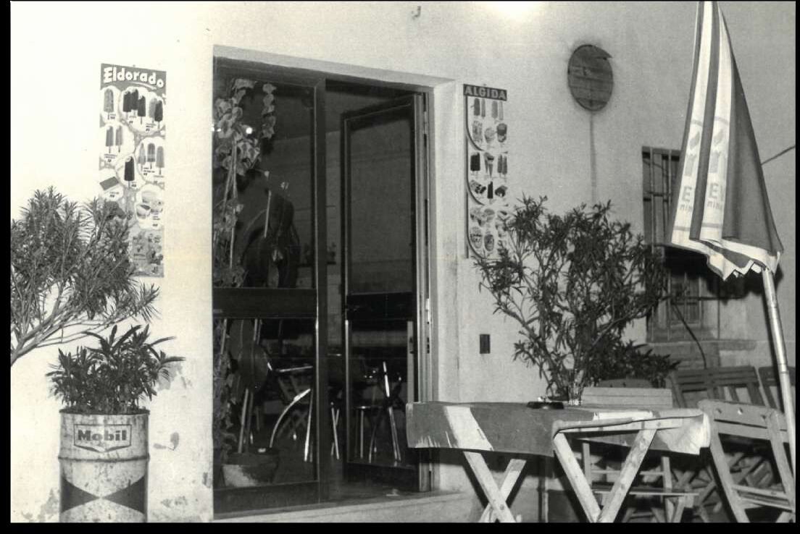
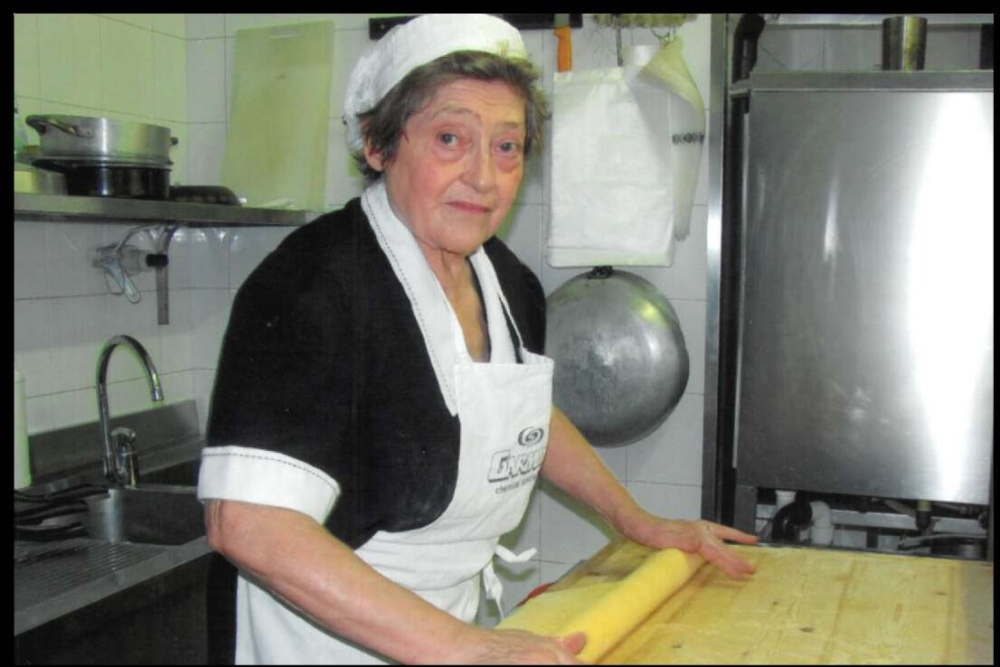
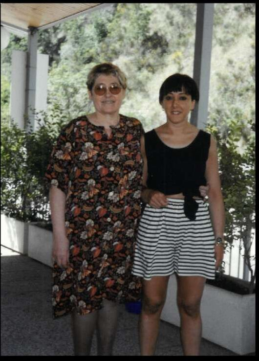

Tutto è cominciato con un bicchiere di vino. Negli anni Cinquanta, Giuseppe Ugolini, detto Gudanzon, aprì qui una piccola osteria — un posto semplice, dove la gente del borgo si fermava a bere, parlare e stare insieme. Niente menu, niente fronzoli: una bottiglia, qualche tavolo, e l'idea che un locale prima di tutto debba essere un punto di ritrovo.
Con lui c'era la moglie Marina. Poi arrivò la figlia Faustina, e con lei arrivò la cucina vera: la piadina stesa al mattino, le tagliatelle tirate a mano, l'orto dietro casa. Quello che era un luogo di sosta diventò un luogo dove sedersi, mangiare, tornare. La trattoria nacque qui, nella stessa stanza, con la stessa famiglia.

La sfoglia tirata col mattarello, l'impasto lasciato riposare, le tagliatelle tagliate a coltello: un rituale tramandato di madre in figlia, da sempre. Niente macchine che fanno il lavoro al posto delle mani.
«Farti sentire a casa è la nostra priorità, e lo facciamo partendo dagli ingredienti.»
Oggi Maria porta avanti la stessa pasta fatta in casa, la stessa piadina, le ricette di sempre. La cucina è cambiata poco perché poco c'era da cambiare: si compra dal macellaio sammarinese di fiducia, dal contadino dell'orto qui accanto, dai vignaioli di Borgo Maggiore. Si cucina con quello che c'è, di stagione, come si è sempre fatto.

Da queste sale sono passati ospiti illustri — Pippo Baudo, Valentino Rossi, Miki Biasion, Renata Tebaldi e vari Ministri Internazionali — ma il tavolo migliore resta quello apparecchiato per chi torna ogni settimana, per la coppia al primo appuntamento, per la famiglia che cresce. Nel 2018 ci hanno premiato col Gran Premio del Turismo Sammarinese, ma il riconoscimento più vero è ancora una sedia tirata fuori per fare spazio a un amico.
Vi aspettiamo a tavola.